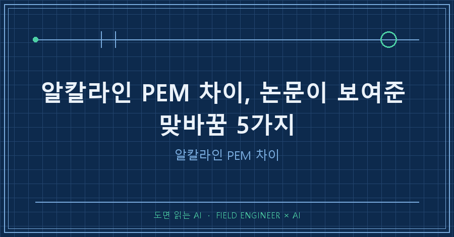

수전해 방식이 여러 개인 건 아직 승자가 안 정해져서가 아니에요. 알칼라인 PEM 차이는 우열이 아니라 맞바꿈입니다. 싸고 오래 가는 쪽과 빠르고 촘촘한 쪽이 서로 교환되는 구조라 하나로 통일이 안 됩니다.
이번에 읽은 건 노르웨이과학기술대(NTNU)와 SINTEF가 2024년 ESREL에 낸 전해조 사고 리뷰예요 [Tuhi 외 2024]. 비교 논문이 아니라 사고 논문인데, 오히려 그래서 차이가 선명하게 나옵니다. 사고가 서로 다른 자리에서 나거든요.
1. 알칼라인 PEM 차이는 이렇게 갈립니다
논문이 1장과 2장에 적은 대비를 그대로 옮기면 이렇습니다.
| 항목 | 알칼라인 | PEM |
|---|---|---|
| 성숙도 | 대규모 전해의 표준, 매우 성숙 | 더 최근 기술, 중소 규모 중심 |
| 투자·유지비 | 더 낮음 | 더 비쌈(백금·이리듐 촉매, 티타늄 부품) |
| 수명 | 더 김 | 더 짧음 |
| 전해질 | KOH 또는 NaOH 수용액, 약 30 중량% | 얇은 산성 고분자막(주로 Nafion 계열) |
| 운전 | — | 더 유연·소형·고효율, 더 높은 전류밀도·온도·압력 |
알칼라인이 싼 대신 약 30 중량% 알칼리 용액이 설비 안을 계속 돕니다. 논문은 "순환하는 다량의 가성 전해액"을 알칼라인의 주요 안전 이슈로 못 박아요 [Tuhi 외 2024, §2.1]. PEM은 반대쪽입니다. 얇은 고분자막이 가스가 서로 넘어가는 걸 줄여 가연성 혼합물 위험을 낮추는데 [Tuhi 외 2024, §2.2], 그 대가가 백금과 이리듐, 그리고 티타늄이에요. 값을 깎으면 유연성이 깎이고, 유연성을 사면 값을 냅니다.
2. 고장 데이터가 없어서, 사고를 뒤졌습니다
논문이 붙잡은 문제는 따로 있어요. 전해조 고장 데이터가 부족합니다 [Tuhi 외 2024, §1]. 그래서 지난 사고 시나리오를 분석하는 게 안전 운전을 확보하는 데 큰 역할을 한다고 적어요.
유럽 공동연구센터가 만든 수소 사고 데이터베이스 HIAD 2.1에는 수소 관련 사고가 713건 올라와 있는데, 그중 전해조 관련은 8건뿐이었습니다. 문헌 검색으로 3건을 더해 1975년부터 2021년까지 총 11건을 훑었어요 [Tuhi 외 2024, §4.1]. 전해조 사고가 통계로 잡히기엔 표본이 이만큼 얕다는 뜻이기도 합니다.
3. 사고가 나는 자리도 방식마다 갈립니다
11건을 방식별로 놓고 보면 원인이 갈라져요.
알칼라인 쪽은 침전물(슬러지)과 전해액입니다. 1975년 영국 라포트 공장 폭발은 셀에 두껍게 쌓인 슬러지가 전극과 분리막을 부식시켜 셀이 물리적으로 무너진 게 발단이었어요. 1690 L 산소 드럼에 수소가 약 13.5% 섞였고, 충격파는 TNT 22 kg에 해당했으며, 작업자 한 명이 사망했습니다. 2021년 독일 KOH 누출도 유로에 쌓인 침전물이 시작이었고요 [Tuhi 외 2024, Table 1].
PEM 쪽은 막입니다. 2012년 실험실에서 1.8 A/cm²의 높은 전류밀도로 시험하던 중 막이 천공됐어요. 개별 셀 전압이 갑자기 떨어지고 산소 쪽 수소량이 늘어난 것으로 고장을 잡아냈습니다 [Tuhi 외 2024, §4.1].
다만 결말은 한 곳으로 모입니다. 논문이 정리한 최악의 결과는 전해조 내부에서 수소·산소 혼합물이 만들어져 폭발하는 것 하나예요 [Tuhi 외 2024, §4.2]. 2019년 국내 사고도 막 열화로 산소가 수소 쪽에 흘러 들어간 경우로 분류돼 있고, 사망 3명·부상 6명으로 기록됩니다 [Tuhi 외 2024, Table 1].
4. '빠르다'는 게 공짜는 아니에요
재생에너지는 출력이 오르내려서 전해조가 그 변동을 따라가야 합니다. PEM이 유연하다는 게 여기서 값을 해요. 전류밀도가 수소 생산율을 직접 좌우하니까요. 그런데 논문이 바로 단서를 답니다.
> 전류밀도의 급격한 변화는 전해조 부품을 손상시키는 것으로 나타났으며, 이는 조작 변수로서의 사용을 제한할 수 있다. [Tuhi 외 2024, §4.4]
빠르게 움직일 수 있다는 것과 빠르게 움직여도 된다는 건 다른 말입니다. 전류밀도는 크로스오버율과 전압 열화에도 함께 영향을 주고, 온도 역시 크로스오버율을 좌우하는데 특히 낮은 전류밀도에서 그렇다고 적혀 있어요 [Tuhi 외 2024, §4.4]. 부하를 낮출수록 신경 쓸 게 늘어납니다.
감시 목록도 방식마다 달라요. 논문은 PEM 제어변수를 고를 때 전해액 유량을 뺍니다. PEM에는 해당이 없거든요 [Tuhi 외 2024, §4.4]. 반대로 침전물 위험이 있는 알칼라인에서는 셀 온도와 전해액 유량이 감시 대상으로 남습니다 [Tuhi 외 2024, Table 2].
5. AEM은 왜 안 나오나 — 이 논문을 AI에게 읽힌 방법
여기부터는 도구 이야기예요. 어느 분야 논문에나 그대로 씁니다.
AI에게 "이 논문 기준으로 알칼라인·PEM·AEM을 비교해 줘"라고 시켰더니 세 방식이 나란히 들어간 표를 그럴듯하게 만들어 줬어요. 문제는 이 논문에 AEM이 한 번도 안 나온다는 겁니다. 전문에서 anion, AEM, alkaline exchange 세 문자열을 찾으면 0건이에요. 그래서 표를 지웠고, 그 과정에서 쓴 방법이 세 가지입니다.
1. 주장마다 원문 문장을 내놓게 하고, 그 문장을 문자열로 검색한다. "요약해 줘"가 아니라 "근거 문장을 절 번호와 함께 원문 그대로 붙여라"로 묻습니다. 검색에 안 걸리면 그 주장은 논문에 없는 거예요.
2. 끊긴 문장을 찾아 눈으로 다시 읽는다. 이 PDF는 텍스트로 뽑으면 한 문장이 temperatures, and p 에서 잘리고 다음 줄이 Nevertheless로 시작해요. 범인은 인용 표기 (Falcão et al., 2020)의 ã였습니다. 2장 끝에서도 by an electrolyte (Fal 로 같은 자리가 끊기고요. 그래서 그 좌표만 이미지로 렌더링해 육안으로 읽었습니다. 잘린 문장은 AI가 조용히 이어 붙이니까, 마침표 없이 끝나거나 소문자로 끝나는 줄을 추출 실패 신호로 잡으면 됩니다.
3. 관측인지 인용인지, 그리고 몇 년 것인지 구분시킨다. 이 논문의 비교 서술은 대부분 남의 논문을 옮긴 거예요. 비용·수명은 (Rizwan 외 2021), 유연성·압력은 (Falcão 외 2020), 1~30 bar와 50~80 °C는 (IRENA 2020)에서 왔습니다 [Tuhi 외 2024, §1·§4.4]. 순도 기준(산소 98.8%·수소 99.7%에서 경보, 산소 98%·수소 99.5%에서 정지)은 더 멀어서, 1976년 영국 공장감독국 사고 보고서를 재인용한 값이에요 [Tuhi 외 2024, §4.3]. 2024년 논문에 실렸다고 2024년 수치가 아닙니다.
6. 남는 질문들 — 이 논문이 답하지 않는 것
이 논문은 비교 논문이 아니라 사고 리뷰라 비어 있는 데가 있어요. 가격을 숫자로 대지 않고, AEM과 고체산화물을 다루지 않으며, 식별한 운전 조건을 어떤 방법으로 감시할지는 이 연구에서 논의하지 않는다고 직접 밝힙니다 [Tuhi 외 2024, §1].
Q. 알칼라인 PEM 차이를 한 줄로 말하면요?
논문은 우열을 매기지 않아요. 비용·수명은 알칼라인, 유연성·압력·전류밀도는 PEM이라는 대비까지만 적습니다 [Tuhi 외 2024, §1].
Q. 두 방식의 사고 원인이 완전히 다른가요?
출발점이 다르고 결말이 같아요. 알칼라인은 침전물과 부식, PEM은 막 천공에서 시작하는데 도착지는 둘 다 수소·산소 혼합입니다 [Tuhi 외 2024, §4.2].
Q. 논문이 꼽은 위험 요인은 몇 가지인가요?
다섯입니다. 막 손상, 가스 분리기의 물리적 파손, 전극 부식, 가스 크로스오버, 침전물 생성 [Tuhi 외 2024, §4.2].
---
종류가 나뉜 건 기술이 미완이라서가 아니라 맞바꿀 게 있어서고, 사고 기록은 그 맞바꿈이 어디서 대가를 치르는지 보여 줍니다. 다음 편에서는 배터리로 안 되는 저장 이야기를 같은 방식으로 읽어 볼게요.
> 출처 Tuhi, F. Y., Fredriksen, M., Bucelli, M., Liu, Y. (2024). Accidents Review And Control Assessment For Reliable Operation Of PEM Water Electrolyzer Stacks. *Advances in Reliability, Safety and Security, Part 9*, ESREL 2024 Monograph Book Series. ISBN 978-83-68136-08-1.
> 본문 그림은 논문 도표 전재가 아니라 개념을 직접 그린 것입니다.
→ 원문과 대조하며 걸러낸 것들은 [makefield.ai](https://makefield.ai)에 그대로 남겨 둡니다.